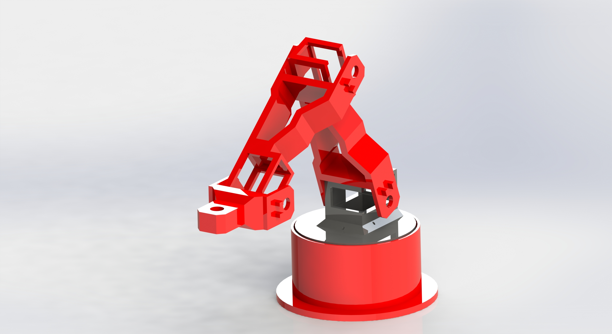
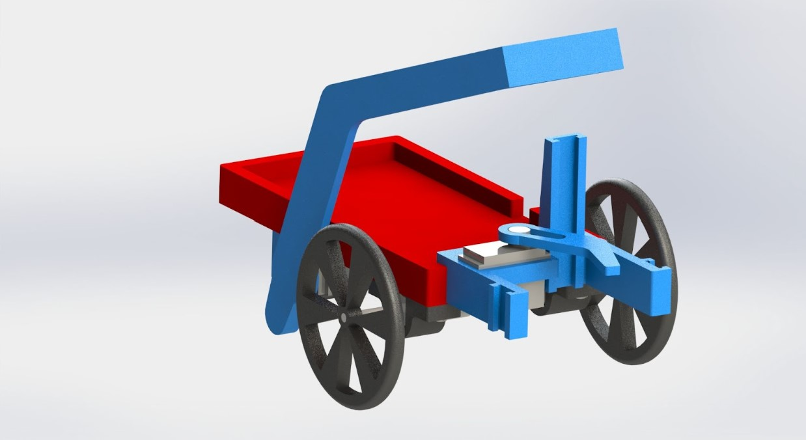
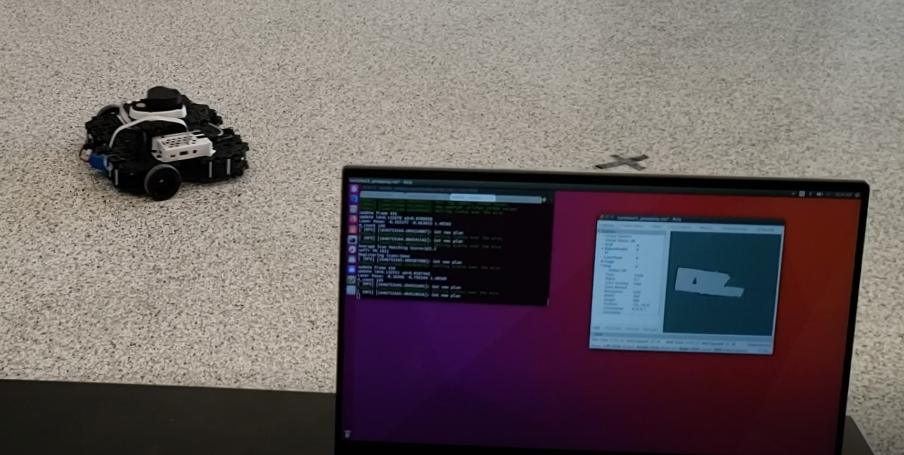

Projects
There are a multitude of projects, both personal and professional, that I have worked on and I am excited to share them with you. You can click on the title of a project to learn more about it.
Robot Arm
The Super Advanced Robot Arm, or SARA, was a personal project of mine designed to apply knowledge learned during my education to work on something that was fun and interesting for me. SARA was designed and maufactured by me using solidworks, blender, and my personal 3D printer. SARA's design inspiration was taken from different sources of professional robot arms and simplified for ease of maintenece and manufacturing, while leaving lots of room for modification and improvements. SARA is currently on its second iteration of design. It utilizes joystick modules to control servo motors through an arduino uno microcontroller. The current end effector is designed for small scale pick and place operations.
Electrical Power Conversion Unit

The Electrical Power Conversion Unit was my capstone project as a part of my final year of my undergraduate degree. The purpose of this project was to create a way for clean, off-grid energy to be produced at any rotational speed. Using a continuously variable transmission, or CVT, and connecting it to an induction machine, a device was created to convert rotational mechanical energy into electrical power no matter what the rotational speed was. The induction machine produced 120V AC at a specific speed, and the transmission was modified to automatically gear the generator down if the speed would cause the voltage to go above what is safe for the device.
Autonomous Mobile Robot
One of the school projects that I worked on during my education was a small mobile robot designed to solve a maze of a known layout. The robot was assembled using parts designed by our group and manufactured on my personal 3D printer. The electronics for the robot were provided by the school, and consisted of an arduino microcontroller, 2 DC motors, and a few distance sensors. The algorithm for the robot included a PID that controlled the voltage given to each of the wheels, to correct any drift from left to right sensed by the distance sensors.
Turtlebot Mapping and Localization
This project involved using ROS to get a tutlebot wafflepi to complete different milestones that build off of each other. The milestones involved mapping a room of approximately 15 square meters, detecting and avoiding packages, and retrieving these packages and returning them to the start point. The mapping and localization was document with a lidar sensor mounted on the top of the robot. The detection of the packages was done with the help of a camera and a custom developed search algorithm. Package retrieval was accomplished using custom 3D printed parts to grab the package and return to the start point.
The Game of Google Trends
Google Trends is a game that my friends and I play every now and again. It consists of comparing google search terms that we come up with against each other and awarding points based on the number of average searches that each players term has. Its based on a web show of the same name. When we first started, there were a lot of different things that we needed open in order to play. We needed the actual google trends page for comparing the terms, a random word generator, a timer, and an excel sheet to keep track of points. I created this website specifically to hold all of those things in one place. The website has a link to the google trends site, a random word generator, timer, and scoreboard. The page also displays all the rules for the game. This project was done in HTML and Javascript with CSS formatting. You can click on the title of this paragraph to view the full website.